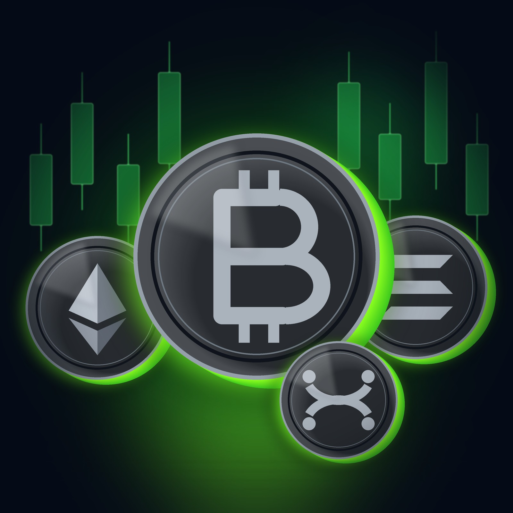

AUSTRALIA · MARKET OUTLOOK AS AT 20 NOV 2026
WHICH CRYPTO
COULD LEAD IN
NOVEMBER 2026?
Bitcoin, Ethereum, Solana and XRP were all down in November at the time of writing. See what the last four Novembers show, which scenarios to watch, and what Australians should check in AUD.
General information only, not financial advice. Crypto assets are highly volatile and you could lose some or all of the money you invest.

WHERE THINGS STAND
TWO SIGNALS HEADING INTO MONTH-END
THE WATCHLIST
WHAT THE LAST FOUR NOVEMBERS TELL US
Same four completed Novembers, same four coins. Returns are rounded and based on Binance spot prices quoted in USDT, excluding fees. The median is the midpoint of the four results, which shows how one exceptional month can distort the picture.
| CRYPTO | NOV 2022 | NOV 2023 | NOV 2024 | NOV 2025 | 4-YR MEDIAN |
|---|---|---|---|---|---|
| Bitcoin BTC | −16.2% | +8.8% | +37.3% | −17.5% | −3.7% |
| Ethereum ETH | −17.7% | +13.1% | +47% | −22.3% | −2.3% |
| Solana SOL | −56.5% | +54.4% | +40.9% | −28.7% | +6.1% |
| XRP XRP | −12.1% | +1.1% | +283% | −14.1% | −5.5% |
Same direction, every time. All four rose in November 2023 and 2024, and all four fell in November 2022 and 2025.
The winner changed each year. Solana led in 2023, while XRP's roughly 283% surge put it far ahead in 2024.
Four data points aren't odds. That is too few to estimate reliable odds for November 2026, and XRP still had the lowest median.
MONTH-END SCENARIOS
WHAT COULD HAPPEN BY MONTH-END?
Pick a market scenario to see which coin the data says to watch. These use historical returns and November's performance to date. They carry no assigned probabilities or price targets.
WATCH SOLANA'S HISTORICAL STRENGTH
Solana has the strongest median across the four completed Novembers, but that does not guarantee a rebound. Compare price action and risk before drawing conclusions.
FOR AUSTRALIAN READERS
YOUR RETURN IS THE ONE IN AUD
The figure that matters is your return in Australian dollars after fees and spreads. A weaker Australian dollar can cushion a USD-denominated loss in AUD terms, while a stronger one can reduce a USD-denominated gain.
Compare the AUD buy and sell prices on your platform, including the spread and any transaction fees, before treating a global percentage move as your own.
USD → AUD AT THE RBA RATE
Equals about
Illustrative only, using AUD/USD 0.6677
(RBA, 19 Nov 2026). Excludes platform
spreads and fees.
CRYPTO KNOWLEDGE
FOUR IDEAS TO READ THE MARKET SMARTER
PAST RETURNS ARE NOT PREDICTIONS
Four Novembers are not enough to forecast the next one reliably.
THE MEDIAN MATTERS
The midpoint helps keep one exceptional year from dominating the story.
VOLATILITY CUTS BOTH WAYS
Large past gains can sit alongside equally significant losses.
CHECK YOUR AUD RETURN
Exchange rates, spreads and transaction fees affect your result.